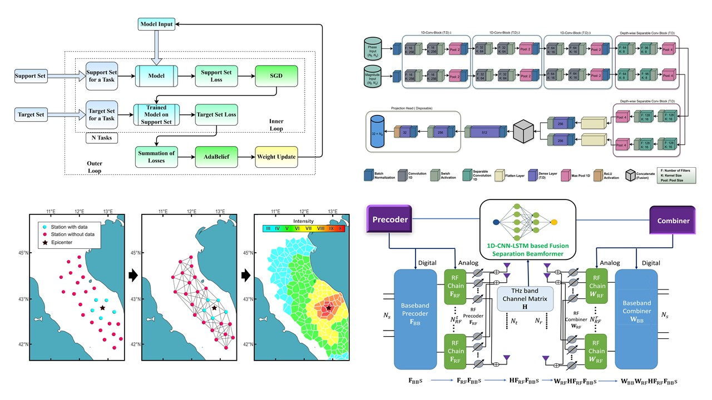

Neural wireless radiance fields
I study NeRF-inspired wireless channel models that encode antenna geometry, phase uncertainty, and measurement sparsity into differentiable learning pipelines for actionable channel representations.
Research vision
My research builds deployable machine learning systems that understand how radio waves propagate through the physical world. The long-term goal is to make wireless networks sense, predict, and control their environments with the same fidelity that modern vision models reason about images.
“The knowledge of anything, since all things have causes, is not acquired or complete unless it is known by its causes.”

I study NeRF-inspired wireless channel models that encode antenna geometry, phase uncertainty, and measurement sparsity into differentiable learning pipelines for actionable channel representations.
My NeurIPS 2026 submission explores neural operators for wireless field modeling, with an emphasis on scalable object-centric generalization across spaces, layouts, and propagation conditions.
At InterDigital AI Lab, I am developing unsupervised physics-based CSI compression and spatiotemporal channel forecasting models for compact, AI-ready 3GPP and 6G wireless representations.
Build continuous, task-agnostic representations of RF environments from sparse CSI and imperfect observations.
Treat antenna geometry, phase ambiguity, bandwidth, and limited measurements as inductive biases rather than obstacles.
Reuse learned fields for beamforming, AoA profiling, coverage mapping, resource allocation, and autonomous network control.

I developed low-complexity beam selection and singular-vector projection techniques for mmWave/THz MU-MIMO, including theoretical interference bounds and robustness under imperfect CSI.
My work on MetaFAP and IR-DNN studies how learning systems can predict and invert metasurface responses across frequency bands for scalable RIS-assisted wireless networks.
I built self-supervised contrastive GNNs for earthquake early warning and edge computer-vision systems for automated level crossings, demonstrating AI workflows under real-world sensing constraints.
These works would not be possible without guidance and collaboration from exceptional faculty and researchers.